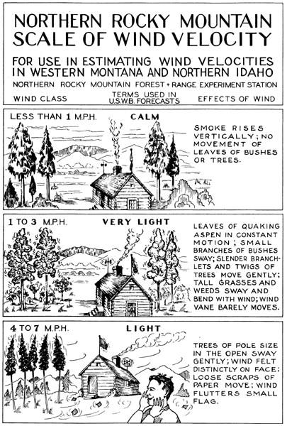
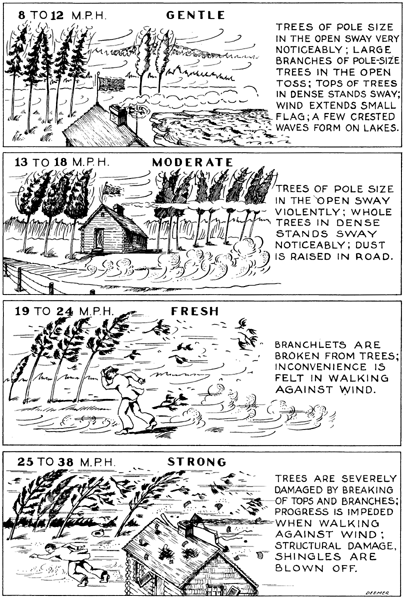
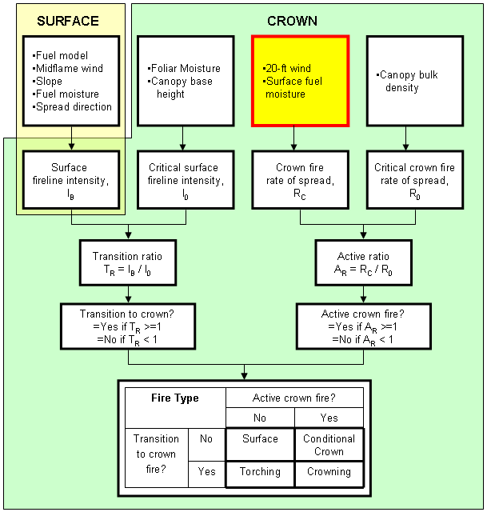
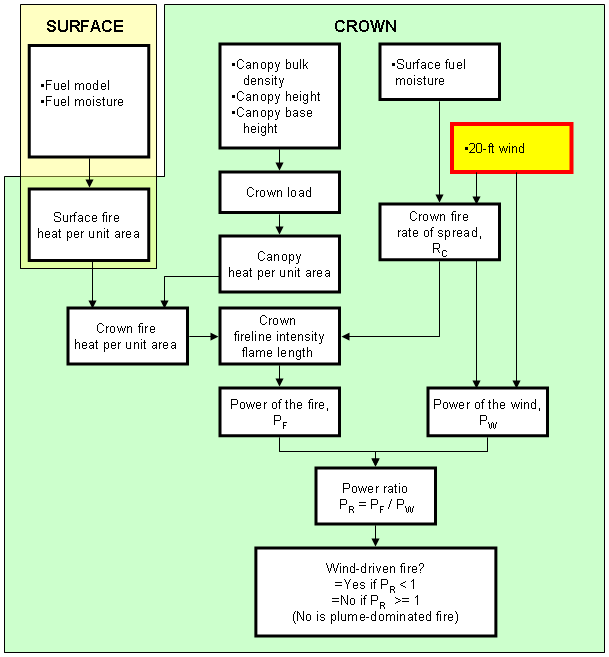

|
|
20-Foot Wind Speed |
20-foot wind speed is the wind value at 20 feet above the vegetation. For fire spread and intensity calculations in SURFACE, the 20-foot wind speed is reduced to the midflame wind speed. In SPOT the 20-foot wind speed is the wind that carries the embers.
If Wind speed is entered as midflame height is selected as an input option for SURFACE, and if either SPOT or CROWN is also selected, the initial version of the worksheet will request both midflame wind and 20-ft wind. The program then offers a choice of how to resolve the conflict.
|
I/O |
Module |
If |
Notes |
| Input | SURFACE | If Wind speed is entered as 20-ft wind and input or calculated wind adjustment factor is selected as an input option. | |
| CROWN | |||
| SPOT | |||
| SCORCH | If Wind speed is entered as 20-ft wind and input or calculated wind adjustment factor is selected as an input option in SURFACE. | ||
| Outputs | None |
Beaufort Scale for Estimating 20-ft Wind Speed
| Wind Class | Wind Speed (mph) |
Nomenclature |
|---|---|---|
| 1 | 0 - 3 | Very light:
|
| 2 | 4 - 7 | Light:
|
| 3 | 8 - 12 | Gentle breeze:
|
| 4 | 13 - 18 | Moderate breeze:
|
| 5 | 19 - 24 | Fresh:
|
| 6 | 25 - 31 | Strong:
|
| 7 | 32 - 38 | Moderate gale:
|
| 8 | 38 + | Fresh gale:
|
|  |
|  |
|  |
|  |